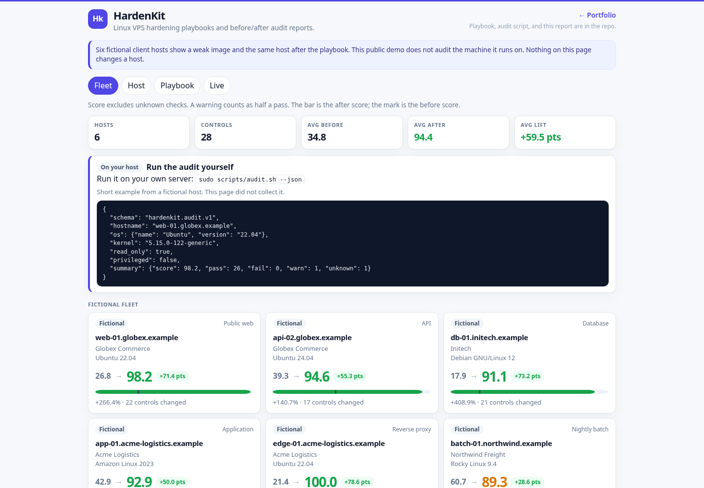
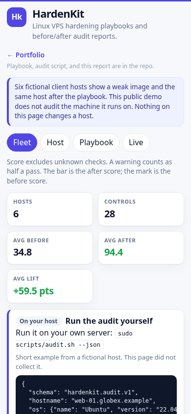

HardenKit
A Linux VPS hardening toolkit and a before/after audit report. The playbook and the bash fallback lock down SSH, the firewall, fail2ban, unattended security updates, sysctl, auditd, accounts, and time sync. The web page is the thing a client can click: six fictional hosts, each with a weak image and the same host after the playbook. The public demo does not audit the machine it runs on. Run scripts/audit.sh on a host you administer.
Overview
HardenKit is a portfolio piece for the work of taking a fresh Linux VPS and leaving it with a written baseline. The Ansible playbook is the source of the change. scripts/audit.sh only reads. The FastAPI page renders the fictional before/after reports. A live audit of the process host is off unless HARDENKIT_LIVE_AUDIT=1, so a public copy does not publish that machine's name, kernel, or addresses.
Problem → Solution → Result
Problem
- A fresh VPS image still has password SSH, no firewall, and no story for security updates. The checklist lives in a ticket, not in a file you can re-run.
- An audit that needs root, or that shells out from a web request, is the wrong shape for a public demo.
- A report that only says "hardened" hides which control moved, which one is still open, and which role is supposed to fix it.
Solution
- One playbook (
ansible/site.yml) with roles for SSH, firewall (ufw or firewalld), fail2ban, unattended-upgrades or dnf-automatic, sysctl, auditd, accounts, a/tmpmount, and chrony.scripts/harden.shprints the same baseline and refuses to write unless it is root. - A read-only audit of about 28 CIS-style checks. Missing tools and root-only probes become
unknowninstead of a crash. The page runs that script on a fixed argument list, with a timeout, and never takes a path or a command from the request. - A single page: fleet scores, a host checklist grouped by category, the before/after diff, the role and task that fix each row, a playbook browser limited to a whitelist, and a JSON or print download.
Result
GET /api/hostsreturns six fictional hosts with before and after scores, the point lift, and the percent lift.GET /api/livereturns{"enabled": false}unlessHARDENKIT_LIVE_AUDIT=1. The public page shows how to runsudo scripts/audit.sh --jsonand a short JSON example from the fictional hostweb-01.globex.example. With the flag on, the same route caches a real read-only audit for a host you administer.pytestchecks the score math, that fixture JSON andaudit.sh --jsonshare a schema, that playbook ids cannot escape the whitelist, and that the live runner uses a fixed argv withshell=False.
These are capabilities of this demo, not claims about a client engagement.
Features
- Fleet overview with a before mark and an after bar. Unknown checks are left out of the score. A warning counts as half a pass.
- Host detail grouped into SSH, Network / Firewall, Updates, Logging / Audit, Kernel, Filesystem, and Accounts. Each row has pass, fail, warn, or unknown, the expected value, the remediation, and the Ansible role and task.
- Filters for every control, only the ones that changed, and the ones still open after the playbook.
- Playbook tab with a fixed file list. The request id is a key in a map, not a filesystem path. Snippets are escaped, then highlighted in the page.
- Downloadable JSON and a print-friendly HTML view for each fictional host.
- Optional live audit (
HARDENKIT_LIVE_AUDIT=1) on startup and every six hours. The newest eight snapshots are kept in SQLite. The audit does not install packages and does not write configuration. The public unit leaves this flag at0. scripts/harden.shdefaults to--dry-run.--applyexits immediately when it is not root.
Architecture
Live demo (what the public page is):
Browser
|
| relative URLs (api/..., static/..., ../)
v
edge nginx, prefix stripped
|
v
systemd: python -m app 127.0.0.1:18804
|
+--> data_seed/fleet.json fictional before/after reports
+--> scripts/audit.sh --json only if HARDENKIT_LIVE_AUDIT=1
+--> SQLite DATA_DIR/hardenkit.db newest 8 live snapshots
+--> ansible/ whitelist read for the Playbook tabflowchart LR
browser[Browser] --> nginx[nginx prefix stripped]
nginx --> app[FastAPI]
app --> seed[fleet.json]
app --> audit[audit.sh]
app --> db[SQLite]
app --> playbook[ansible whitelist]The playbook is not applied by the web process. Applying it is an operator step, on a host you already have Ansible access to, or harden.sh --apply as root on that host.
Tech stack
- Python 3.9+ (developed and tested on newer 3.x as well), FastAPI, uvicorn, stdlib sqlite3.
- Ansible (ansible-core) for the playbook. Roles use
ansible.builtinonly. - Bash for the read-only audit and the dry-run hardening script.
- One HTML page, vanilla JS, and one CSS file. Charts are inline SVG. No CDN, no web font, no tracker.
Run locally
cd hardenkit
python3 -m venv .venv
.venv/bin/pip install -r requirements.txt
.venv/bin/python -m apprun.sh creates the venv if it is missing and starts the same module. Open http://127.0.0.1:18804/. Live audit is off by default, so the process does not read this machine. Set HARDENKIT_LIVE_AUDIT=1 only on a host you administer. The first request then waits until that audit finishes (usually under a minute).
The audit and the playbook syntax check:
bash scripts/audit.sh --json
bash scripts/harden.sh --dry-run
.venv/bin/pip install -r requirements-dev.txt ansible-core ansible-lint
.venv/bin/ansible-playbook --syntax-check -i ansible/inventory.example.ini ansible/site.yml
.venv/bin/ansible-lint ansible/site.yml
.venv/bin/python -m pytestDocker Compose
Docker is optional. The public demo does not use it.
docker compose up --buildThe container listens on 127.0.0.1:18804, runs as uid 10001, and keeps SQLite on the hardenkit_data volume. The root filesystem is read-only. /tmp is a tmpfs. HARDENKIT_LIVE_AUDIT defaults to 0 in the image and in Compose, matching the public unit.
The dnf_automatic role configures the dnf-automatic package on Red Hat family hosts. Debian hosts use unattended_upgrades instead.
Configuration
| Variable | Default | Purpose |
|---|---|---|
HOST | 127.0.0.1 | Bind address. Set 0.0.0.0 only inside a container. |
PORT | 18804 | Listen port. |
DATA_DIR | ./data | SQLite directory for live audit snapshots. Created on first write. |
HARDENKIT_LIVE_AUDIT | 0 | 1/true/yes/on runs scripts/audit.sh and publishes that report. Anything else, including unset, leaves it off. The public page then returns {"enabled": false} from /api/live and does not include a host name, kernel, or address from the machine serving the page. |
LIVE_AUDIT_INTERVAL_SECONDS | 21600 | Seconds between live audits when the flag is on. Values below 60 are raised to 60. |
There is no write API, no admin token, and no URL the process will fetch on behalf of a caller.
API endpoints
| Method | Path | Purpose |
|---|---|---|
GET | / | Fleet page. |
GET | /healthz | {"status":"ok",...}. Does not run the audit. |
GET | /api/hosts | Fleet summary and per-host scores. |
GET | /api/hosts/{id} | One fictional host, before and after. |
GET | /api/hosts/{id}/report.json | Same document as a download. |
GET | /api/hosts/{id}/report.html | Print view. |
GET | /api/live | {"enabled": false} by default. A cached audit only when HARDENKIT_LIVE_AUDIT=1. |
GET | /api/playbook | Whitelisted playbook files and their text. |
GET | /api/playbook/{id} | One whitelisted file. Unknown ids are 404. |
GET | /metrics | Prometheus text. |
{id} for hosts is a short name such as web-01. {id} for the playbook is a key such as site or ssh-tasks. A path, a .. segment, or a leading dot is rejected before any file is opened.
Tests
.venv/bin/python -m pytestCoverage includes score rounding, fixture schema against a real audit.sh --json run, playbook whitelist and path traversal, the live runner with a mocked subprocess, relative URLs, the 8 KB body cap, metrics, bash -n, and a non-root --apply refusal. Ansible YAML is parsed in pytest. ansible-playbook --syntax-check and ansible-lint run when those tools are installed (they are also a CI job).
Deployment notes
The live demo is a systemd service on a small VPS, behind nginx. The public URL is https://3.1.79.63/portfolio/hardenkit/. Nginx strips the prefix (proxy_pass http://127.0.0.1:18804/;), so the page uses relative URLs and also works at the bare port.
The unit file is deploy/hardenkit.service (User=ec2-user, WorkingDirectory=/opt/portfolio/hardenkit, MemoryMax=150M, NoNewPrivileges=yes, HARDENKIT_LIVE_AUDIT=0). Install the app under /opt/portfolio/hardenkit, create the venv from requirements.txt, and start the unit. The process binds 127.0.0.1 only. The public page does not run the audit.
Do not point this service at a host you do not administer. The page does not apply the playbook. Night or unattended use of harden.sh --apply is an operator decision on that host, and the script will not run it without root.
Screenshots
Fleet overview at desktop width:

The same page at a phone width:
